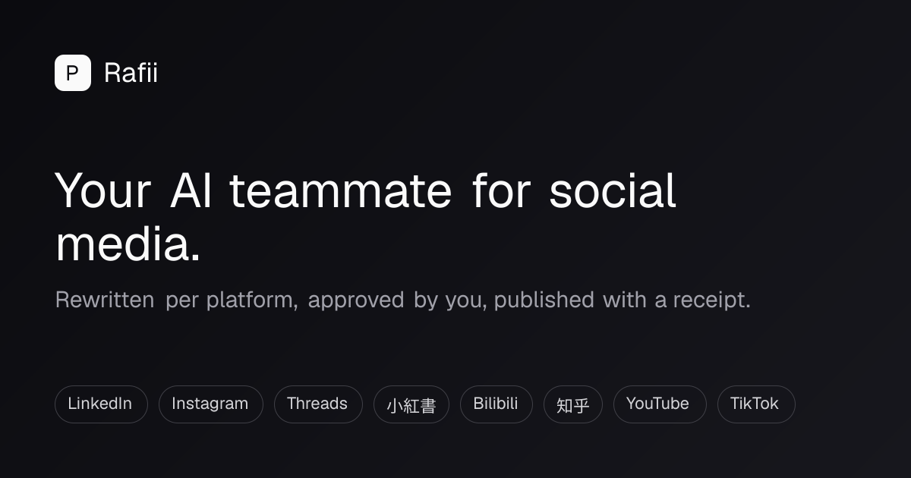

Rafii · Pinterest App1615884 · 未發佈、未排程
兩個待批准的真實 Trial 測試 Pin
修正版已部署到現有 rafii.io，沒有另建 staging。一次已批准圖片匯入及實際 media GET200 已完成。以下帳戶、board、文案、圖片資產與時間已固定，但兩個 Pin 均未獲發佈批准。PUBLIC board 不代表 Trial Pin 公眾可見。Pinterest 官方說明：Trial 建立的 Pin 只供建立者看見。公眾連接保持關閉。
即時測試 Pin · 未批准

上傳的原圖預覽。實際發佈綁定下列已讀回的私有 JPEG 資產，沒有裁切或生成新圖。
Your ideas. Your voice. A clearer content workflow.
- 帳戶
- @jamesaucreates / 1126814906675966091
- Board
- Rafii — Product & Content Workflows / 1126814837958721891
- Section
- 無
- 時間
- 明確批准及前置條件通過後即時
- 描述
- Bring an idea into Rafii, shape a draft for each channel, and review it before approving publication. Explore a practical approach to content planning and publishing at rafii.io. Controlled Pinterest integration test.
- 目的連結
- https://rafii.io/
- Alt text
- Rafii: Your AI teammate for social media. Rewritten per platform, approved by you, published with a receipt.
- 固定素材
- 6c6ca81eae6843b5b28deaec96485925 · JPEG1200×630 · 58,781bytes
- 素材 SHA256
- b59f132e2368e144f7d6dd95a29dacc8cac532fd06e28b7355dd73c32c55c4c6
- 內容指紋
- d1114bb4de90e01c0f5fb3e92bb2364f4504bcaa4c01e6e7a6878952534bf86c
排程測試 Pin · 未批准
上傳的原圖預覽。實際發佈綁定下列已讀回的私有 JPEG 資產，沒有裁切或生成新圖。
Plan your next week of content with Rafii
- 帳戶
- @jamesaucreates / 1126814906675966091
- Board
- Rafii — Product & Content Workflows / 1126814837958721891
- Section
- 無
- 時間
- 2026-10-18 12:00 EDT · America/Indianapolis · 16:00 UTC
- 描述
- Draft your ideas, review the image and wording, then choose when each approved post should go out. Keep a clear view of what is planned and what has actually published. Controlled scheduling test for Rafii’s Pinterest integration.
- 目的連結
- https://rafii.io/
- Alt text
- Rafii: Your AI teammate for social media. Rewritten per platform, approved by you, published with a receipt.
- 固定素材
- 6c6ca81eae6843b5b28deaec96485925 · JPEG1200×630 · 58,781bytes
- 素材 SHA256
- b59f132e2368e144f7d6dd95a29dacc8cac532fd06e28b7355dd73c32c55c4c6
- 內容指紋
- f3043d9841b2532b51d27dc00cba622a9cde5fd67148f577f774cf6e19be8627
批准範圍
最多兩個 provider create attempts：即時一個、18Oct12:00EDT 排程一個；每個意圖最多一次。使用上列同一個私有不可變資產、已核對帳戶及現有 board。不得換圖、換帳戶、換 board、改文案或默默順延時間。13:00EDT 前後只讀測試 Pin Analytics，最遲14:00EDT政策到期停止。
圖片交付與審閱
實際資產是 Library JPEG，已保存唯一 asset ID、object path、SHA256、大小及尺寸。執行時才為該固定物件簽發600秒圖片交付 URL，憑證不寫入預覽。伺服器會再次核對來源屬同一 workspace、bucket及物件。原始 PNG SHA256：8b0a4150bcf7adcbe8de83baa063b05f8f2246c3a3e918c3f40263b5e37dc030。
驗收與停止
先核對當前授權、board 與未過期政策。發佈後須保存 Pin ID、URL、API read-back、帳戶／board、時間及實際 Trial 可見性。排程須保存當地與UTC時間、實際工作執行及無重複證據。Analytics 要分清成功、尚無數據、讀取失敗。POST 結果不確定就停止並查證，絕不自動重發。取消或斷線停止未執行工作；如要刪除已建立 Pin，另以實際 Pin ID 取得批准。
目前仍須本人正常重新登入 Rafii／MFA 以完成被403擋下的 refresh 驗收。Standard 申請與公眾上線均未批准，這次兩個 Trial Pin 不代表公眾正式發佈。
完整 metadata／內容指紋 · 真實圖片匯入及讀回收據